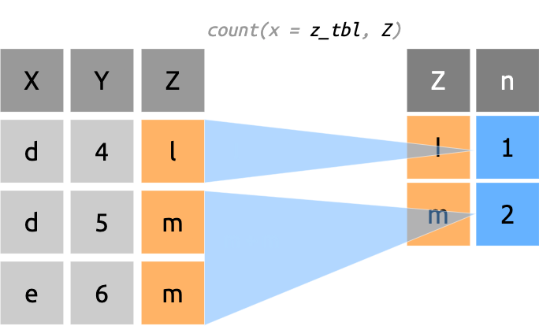
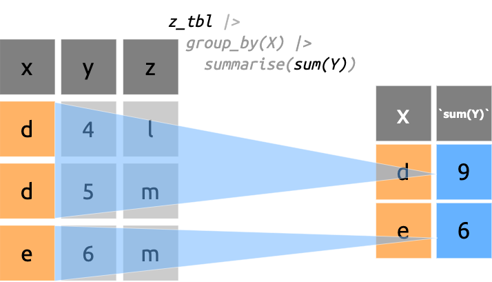

Link to dplyr
website
Link to
cheatsheets
dplyr cheatsheet (part 1)
These exercises cover the first section of the Data Transformation cheatsheet (pipes, group, and summarize).
Below we install and load the packages:
install.packages(c("dplyr", "tibble", "tidyr"))
library(dplyr)
library(tibble)
library(tidyr)Tidy data & Pipes
“
dplyrfunctions work with pipes and expect tidy data.”
There are three main tenets of tidy data:
- Each column contains a single variable
- Each row contains a single observation
- Values are at the intersection of variables and observations
We’ll cover tidy data in more depth in the tidyr
tutorial, but we recommend reading the original paper by Hadley
Wickham.
Pipes
Pipes are an example of syntactic sugar, which are “syntax changes in computer programming which make it easier for humans to code.”
R is a functional programming language, so without pipes, we’d either have to create an output object for every function, or write nested function calls. Consider the examples below:
Imagine we applied a function (first_function()) to an
object (input) which returns and output
(first_output).
What if we wanted to apply a second function to
first_output?
We can either to assign the output from each function to an object:
Or we would have to nest the function calls:
As you can see, the first option clutters up our working environment with intermediate values, and the second option forces us to read the functions from the inside out
Pipes solve this problem by allowing us to ‘pipe’ the output from one function into subsequent functions:
Each time we see a pipe, we can read it as “then do this”
If you’re using RStudio, you can set which pipe you’d like to use under Tools > Global Options > Code: Use native pipe operator |> (requires R 4.1+)
We’re going to use the code blocks below to experiment with pipes on
the x vector.
View x
# view x
xuse %>% to get the mean() of
x
# use %>% to get the mean() of x
x %>% mean()use |> to get the mean() of
x
# use |> to get the mean() of x
x |> mean()use %>% to get the mean() of
x then round() x to 1
digit
# use %>% to get the mean() and round() the output to 1 digit
x %>% mean() %>% round(digits = 1)use |> to get the mean() of
x then round() x to 1
digit
# use |> to get the mean() and round() the output to 1 digit
x |> mean() |> round(digits = 1)%>% or |>?
The cheatsheet examples use the pipe provided by the
magrittr package, %>% (the
magrittr pipe is imported as part of the
tidyverse). As of 2021, R version
4.1.0 (codename “Camp Pontanezen”) was released with a native pipe
(|>). We’re going to demonstrate using both because of
reasons better
explained elsewhere. The important thing to understand about pipes
is how they restructure multiple function calls.
Summarising Cases
Apply summary functions to columns to create a new table of summary statistics. Summary functions take vectors as input and return one value.
One of the most common manipulations we perform on any dataset is a summary. As noted above, the tidy data format places our variables in columns, observations in rows, and values at their intersection.
The ‘tidy’ format is also helpful for data manipulation because we
typically need to collapse and distill the data into something
digestible (usually in the form of summary statistics). Examples of
summary functions include mean(), sd(),
quantile(), and median().
Toy data (X & Y)
We’re going to using the two example datasets from page 2 of the
cheatsheet, X and Y (loaded below as
x_tbl and y_tbl).
dplyr::summarise()
dplyr::summarise() collapses rows into a single number
is (you can also use the American English version,
dplyr::summarize()).
Use the code block below to explore x_tbl and
y_tbl.
# view x_tbl
x_tbl# y_tbl
y_tblsummarise() a single column
We’re going to summarize the numerical column c in
x_tbl using dplyr’s
dplyr::summarise() function in the code block below.
- Supply
x_tblto the.dataargument. - Provide the column we want to summarize (
C) to the…argument using thesum()function to get the summation of the three numbers inC(i.e., assum(C)):
# dplyr::summarise(.data, sum())
dplyr::summarise(.data = ____, sum(_))dplyr::summarise(.data = x_tbl, sum(C))The output is a new data frame/tibble summarizing all observations in the input.
summary functions
The figure below shows what’s happening with
dplyr::summarise() and sum():
As we can see, the column name in the output is identical to the code we’ve used to create the summary.
dplyr::summarise(x_tbl, sum(C))
## # A tibble: 1 × 1
## `sum(C)`
## <dbl>
## 1 6If we’d like to provide a name for the summary column, we can do so using the following syntax:
dplyr::summarise(.data = <data>,
column_name = summary_function(<variable>)
)This essentially assigns the summary variable to a one-column tibble.
Use the code block below to create a summary of column c
in dataset x_tbl and name this column
c_sum:
# dplyr::summarise(.data = ,
# = sum(c))dplyr::summarise(.data = x_tbl,
c_sum = sum(C))We can see the output is a 1 × 1 tibble, with a single
double (<dbl>) column, c_sum.
Named summary functions
The figure below gives us an idea on how the output is created when
we call dplyr::summarise() and provide a name for the new
column.
NOTE: The function we use inside
dplyr::summarise() must be capable of reducing the column
contents into a single number.
dplyr::count()
The dplyr::count() function returns a new data
frame/tibble with the counts (or tally) of all observations. We’ve
created a test dataset, z_tbl, to practice using
dplyr::count() (below).
z_tbl |
||
| X | Y | Z |
|---|---|---|
| d | 4 | l |
| d | 5 | m |
| e | 6 | m |
Use the code block below to dplyr::count the z column in
the z_tbl dataset.
# dplyr::count the observations in the z column
# of the z_tbl dataset
dplyr::count(x = z_tbl, Z)tallying values
With dplyr::count(), each value in the column(s)
provided to x is tallied up and returned under column
n:

Counting and re-shaping
In the
tidyr tutorial we’ve covered pivoting functions
(tidyr::pivot_longer() and
tidyr::pivot_wider()). We can use these functions to
reshape the output table from grouped summaries.
We’ll start with dplyr::count(). Below we’ve counted the
gender and hair variables in
sw_summary.
sw_summary %>%
dplyr::count(gender, hair)## # A tibble: 20 × 3
## gender hair n
## <chr> <chr> <int>
## 1 feminine auburn 1
## 2 feminine black 3
## 3 feminine blonde 1
## 4 feminine brown 6
## 5 feminine none 5
## 6 feminine white 1
## 7 masculine auburn, grey 1
## 8 masculine auburn, white 1
## 9 masculine black 9
## 10 masculine blond 3
## 11 masculine brown 11
## 12 masculine brown, grey 1
## 13 masculine grey 1
## 14 masculine none 31
## 15 masculine white 3
## 16 masculine <NA> 5
## 17 <NA> black 1
## 18 <NA> brown 1
## 19 <NA> none 1
## 20 <NA> unknown 1This output is a little long, so we want to convert it into a
cross-tabulation display, with the values of gender making
up the column names, and the counts for hair making up the
cell counts.
We can do this by pivoting the output from
dplyr::count() into a wide format with
tidyr::pivot_wider() (review it here).
Count & pivot
In the code block below,
Assign
genderto thenames_fromargument,Assign
ntovalues_from:
sw_summary %>%
dplyr::count(gender, hair) %>%
tidyr::pivot_wider(names_from = ______,
values_from = _)sw_summary %>%
dplyr::count(gender, hair) %>%
tidyr::pivot_wider(names_from = gender,
values_from = n)This cross-table display allows us to look up the counts of hair
color by gender (and see which values are missing).
Let’s try another example!
Group, summarize, and pivot
Below we’re going to calculate some summary statistics for the mass
and height variables, but this time we’re going to reshape the data into
a long (‘tidy’) format using tidyr::pivot_longer() (review
this function below):
Complete the
dplyr::group_by()anddplyr::summarise()functions to get the mean and standard deviation formassandht, grouped bygender. Store this insw_grpsView the
sw_grpsdata in the line below
sw_grps <- sw_summary %>%
# group by gender
dplyr::group_by(______) %>%
# get mean and sd for mass and ht
dplyr::summarise(
mean_mass = mean(___, na.rm = TRUE),
mean_ht = mean(__, na.rm = TRUE),
sd_mass = sd(____, na.rm = TRUE),
sd_ht = sd(__, na.rm = TRUE))
# View sw_grps
sw_grpssw_grps <- sw_summary %>%
# group by gender
dplyr::group_by(gender) %>%
# get mean and sd for mass and ht
dplyr::summarise(
mean_mass = mean(mass, na.rm = TRUE),
mean_ht = mean(ht, na.rm = TRUE),
sd_mass = sd(mass, na.rm = TRUE),
sd_ht = sd(ht, na.rm = TRUE))
# View sw_grps
sw_grpssw_grps has been loaded into the code block below,
- convert
sw_grpsinto a long (tidy) format usingtidyr::pivot_longer(), storing the new summary column names in'stat'and the new summary values in'value':
sw_grps %>%
# convert to tidy format
pivot_longer(cols = -gender,
# new column names
names_to = ______,
# new column values
values_to = _______)sw_grps %>%
# convert to tidy format
pivot_longer(cols = -gender,
# new column names
names_to = "stat",
# new column values
values_to = "value")Hopefully these last few exercises have demonstrated how
dplyr and tidyr compliment each other and
allow us to summarize and reshape data into just about any format or
display we need.
Grouping Cases
Use
dplyr::group_by(.data, …, .add = FALSE, .drop = TRUE)to create a “grouped” copy of a table grouped by columns in....dplyrfunctions will manipulate each “group” separately and combine the results.
dplyr::group_by()
dplyr::group_by() adds the "grouped_df"
attribute to a tibble::tibble or
base::data.frame, which divides the data into ‘groups’
based on the column values.
grouped_df
Below we group z_tbl on the Z column and
store the results in z_grp. When we check the structure of
z_grp with str(), we can see the
grouped_df has been included in the list of classes:
z_grp <- z_tbl |> dplyr::group_by(Z)
str(z_grp)
## gropd_df [3 × 3] (S3: grouped_df/tbl_df/tbl/data.frame)
## $ X: chr [1:3] "d" "d" "e"
## $ Y: num [1:3] 4 5 6
## $ Z: chr [1:3] "l" "m" "m"
## - attr(*, "groups")= tibble [2 × 2] (S3: tbl_df/tbl/data.frame)
## ..$ Z : chr [1:2] "l" "m"
## ..$ .rows: list<int> [1:2]
## .. ..$ : int 1
## .. ..$ : int [1:2] 2 3
## .. ..@ ptype: int(0)
## ..- attr(*, ".drop")= logi TRUEThe "groups" attribute has also been added
(attr(*, "groups")), and it’s a 2x2
tbl_df/tbl/data.frame
When we check the "groups" attribute with
attr(), we see the tibble contains the grouping column
(Z), and the row location of the occurrences per value
(.rows):
attr(x = z_grp, which = "groups")
## # A tibble: 2 × 2
## Z .rows
## <chr> <list<int>>
## 1 l [1]
## 2 m [2]Grouping data results in a grouped_df object, but
it also retains the original structure
(tbl_df/tbl/data.frame).
The grouped_df object gives us the ability to perform
specialized operations when we combine it with
dplyr::summarise():
Adding dplyr::summarise()
The z_tbl has been loaded in the code block below:
z_tbl |
||
| X | Y | Z |
|---|---|---|
| d | 4 | l |
| d | 5 | m |
| e | 6 | m |
- Group the
z_tblby theZcolumn
- Pipe the output from
dplyr::group_by()todplyr::summarise()and get thesum()of columnY
# group z_tbl by Z and get the sum of Y
z_tbl |>
dplyr::____(Z) |>
dplyr::____(Y)z_tbl |>
dplyr::group_by(X) |>
dplyr::summarise(sum(Y))The figure below shows the sum() of the Y
column in z_tbl, grouped by X:

Using group_by() with summarise()
allows us to answer questions like, “what is the average
[y] per [x]?” or “what is the
maximum [y] per [x]?”
We can also names the grouped summary columns of the output table
(just like with dplyr::summarise())
In the code block below:
- Group the
z_tblby theZcolumn
- Pipe the output from
dplyr::group_by()todplyr::summarise()
- Name the grouped
sum()of theYcolumny_sum
z_tbl |>
# group z_tbl by X
dplyr::group_by(____) |>
# name and calculate the sum of Y
dplyr::summarise(____ = sum(__))z_tbl |>
# group z_tbl by X
dplyr::group_by(X) |>
# name and calculate the sum of Y
dplyr::summarise(y_sum = sum(Y))Named grouped summaries
The figure below shows the sum() of the Y
column (as y_sum) in z_tbl, grouped by
X:
As we can see, combining dplyr::group_by() and
dplyr::summarise() allows us to apply summary functions to
‘grouped’ columns.
dplyr::rowwise()
“Use
rowwise(.data, …)to group data into individual rows.dplyrfunctions will compute results for each row. Also apply functions to list-columns. Seetidyrcheat sheet for list-column workflow.”
All of the functions we supply to dplyr::group_by() and
dplyr::summarise() are vectorized, meaning they operate on
the columns. The rowwise() function operates across
rows.
Below we’ve loaded a small sample of the dplyr::starwars
dataset (similar to the example in the cheatsheet),
sw_samp. It’s structure (str()) is printed
below:
str(sw_samp)
## tibble [3 × 4] (S3: tbl_df/tbl/data.frame)
## $ name : chr [1:3] "Wedge Antilles" "Lando Calrissian" "Mace Windu"
## $ height : int [1:3] 170 177 188
## $ homeworld: chr [1:3] "Corellia" "Socorro" "Haruun Kal"
## $ films :List of 3
## ..$ : chr [1:3] "The Empire Strikes Back" "Return of the Jedi" "A New Hope"
## ..$ : chr [1:2] "The Empire Strikes Back" "Return of the Jedi"
## ..$ : chr [1:3] "Attack of the Clones" "The Phantom Menace" "Revenge of the Sith"As we can see, the films column is a list (or
list-column), and it contains all the films the character
(name) has appeared in.
In the code block below:
- Pipe
sw_sampto thedplyr::rowwise()function (no arguments)
- In
dplyr::mutate(), createfilm_count(which is thelength()of thefilmscolumn) - Assign the output to
sw_film_countsand print it on the following line
# assign to sw_film_counts
sw_samp %>%
dplyr::____() %>% # apply rowwise()
dplyr::mutate(____ = ____(____)) # create film_count with length(films)
# print sw_film_countssw_film_counts <- sw_samp %>%
dplyr::rowwise() %>%
dplyr::mutate(film_count = length(films))
sw_film_countsThe structure (str()) of sw_film_counts
from the previous exercise is below:
## rowws_df [3 × 5] (S3: rowwise_df/tbl_df/tbl/data.frame)
## $ name : chr [1:3] "Wedge Antilles" "Lando Calrissian" "Mace Windu"
## $ height : int [1:3] 170 177 188
## $ homeworld : chr [1:3] "Corellia" "Socorro" "Haruun Kal"
## $ films :List of 3
## ..$ : chr [1:3] "The Empire Strikes Back" "Return of the Jedi" "A New Hope"
## ..$ : chr [1:2] "The Empire Strikes Back" "Return of the Jedi"
## ..$ : chr [1:3] "Attack of the Clones" "The Phantom Menace" "Revenge of the Sith"
## $ film_count: int [1:3] 3 2 3
## - attr(*, "groups")= tibble [3 × 1] (S3: tbl_df/tbl/data.frame)
## ..$ .rows: list<int> [1:3]
## .. ..$ : int 1
## .. ..$ : int 2
## .. ..$ : int 3
## .. ..@ ptype: int(0)The result is a rowws_df tibble with the length of each
film list from sw_samp
How is this different from dplyr::summarise()?
When we summarize data, the result is always a single column per
summary function. The dplyr::mutate() function adds a new
column to the existing tibble (we’ll cover dplyr::mutate()
in depth in the following section).
In the code block below:
Pipe
sw_sampto thedplyr::rowwise()function again (no arguments)Use
dplyr::summarise()to createfilm_count, usinglength(films)
sw_samp |>
dplyr::____() %>%
dplyr::summarise(____ = ____(____)) sw_samp |>
dplyr::rowwise() %>%
dplyr::summarise(film_count = length(films)) rowwise(.data, …) creates a rowwise_df
and applies functions to the tibble/data.frame row-by-row.
sw_samp |>
dplyr::rowwise() |>
str()
## rowws_df [3 × 4] (S3: rowwise_df/tbl_df/tbl/data.frame)
## $ name : chr [1:3] "Wedge Antilles" "Lando Calrissian" "Mace Windu"
## $ height : int [1:3] 170 177 188
## $ homeworld: chr [1:3] "Corellia" "Socorro" "Haruun Kal"
## $ films :List of 3
## ..$ : chr [1:3] "The Empire Strikes Back" "Return of the Jedi" "A New Hope"
## ..$ : chr [1:2] "The Empire Strikes Back" "Return of the Jedi"
## ..$ : chr [1:3] "Attack of the Clones" "The Phantom Menace" "Revenge of the Sith"
## - attr(*, "groups")= tibble [3 × 1] (S3: tbl_df/tbl/data.frame)
## ..$ .rows: list<int> [1:3]
## .. ..$ : int 1
## .. ..$ : int 2
## .. ..$ : int 3
## .. ..@ ptype: int(0)Adding dplyr::mutate() creates a new column in the
output data…
sw_samp %>%
dplyr::rowwise() %>%
dplyr::mutate(film_count = length(films))
## # A tibble: 3 × 5
## name height homeworld films film_count
## <chr> <int> <chr> <list> <int>
## 1 Wedge Antilles 170 Corellia <chr [3]> 3
## 2 Lando Calrissian 177 Socorro <chr [2]> 2
## 3 Mace Windu 188 Haruun Kal <chr [3]> 3…while dplyr::summarise() will return a single
column.
sw_samp %>%
dplyr::rowwise() %>%
dplyr::summarise(film_count = length(films))
## # A tibble: 3 × 1
## film_count
## <int>
## 1 3
## 2 2
## 3 3dplyr::ungroup()
“Returns ungrouped copy of table.
ungroup()”
Use dplyr::ungroup() to return grouped data to it’s
previous un-grouped structure.
Two datasets have been loaded into the code blocks below:
mtcars: thedatasets::mtcarsas adata.frameg_mtcars:mtcarsthat’s been grouped bycyland had the meanmpgcalculated asavg
- View the structure (
str()) ofmtcars
# view the str() of mtcars
str(____)str(mtcars)- View the structure (
str()) ofg_mtcars
# view the str() of mtcars
str(____)str(g_mtcars)mtcars is a data.frame, and
g_mtcars is a
grouped_df/tbl_df/tbl/data.frame.
In the code block below:
- Un-group the
g_mtcarsdata
- Pipe the results of
dplyr::ungroup()tostr()
# ungroup g_mtcars
g_mtcars |>
____() |>
____()# ungroup g_mtcars
g_mtcars |>
ungroup() |>
str()Notice the structure of the ungrouped g_mtcars is a
tbl_df/tbl/data.frame, despite the fact that
mtcars was originally a data.frame. This is an
important feature of
dplyr::ungroup()–group_by() and
summarise() will automatically convert and input
data.frame into a tibble.
Use dplyr::ungroup() to remove the
grouped_df attribute from a
tibble/data.frame.
Multiple Group Summaries
We’ve loaded another subset of the starwars dataset as
sw_summary for these exercises.
Use the code block below to explore sw_summary:
sw_summaryWe’ll often want to create more than a single grouped summary for our
data. A common set of numbers is the five-number
summary, which consists of the lowest value (min()),
the lower quartile (quantile(x, 0.25)), the middle value
(median()), the upper quartile
(quantile(x, 0.75)), and the highest value
(max()).
Five number summary
We’re going to create a five number summary for the mass
variable in sw_summary, grouped by gender.
We’ll start with minimum value.
In the code block below:
- Pipe the
sw_summarytogroup_by()and addgender
- Use
summarise()to get the minimum (min())
# switching pipes!
sw_summary %>%
# group by gender
dplyr::group_by(______) %>%
dplyr::summarise(
# minimum using min(x)
min_mass = )# switching pipes!
sw_summary %>%
# group by gender
dplyr::group_by(gender) %>%
dplyr::summarise(
# minimum using min(x)
min_mass = min(mass))dealing with missing values
You may have noticed a lot of missing values in our output. We’re
seeing this because of the missing values (NA) in
gender and mass. We can remove the missing
values from the calculation using na.rm = TRUE.
In the code block below:
- Add
na.rm = TRUEto the minimum calculation (min())
sw_summary %>%
# group by gender
dplyr::group_by(gender) %>%
dplyr::summarise(
# minimum using min(x)
min_mass = min(mass, ____ = TRUE))sw_summary %>%
# group by gender
dplyr::group_by(gender) %>%
dplyr::summarise(
# minimum using min(x)
min_mass = min(mass, na.rm = TRUE))Finish the five-number summary in the code block below (we’ve started it for you):
# finish removing the missing (NA) values from mass
sw_summary %>%
# group by gender
dplyr::group_by(______) %>%
dplyr::summarise(
min_mass = min(mass, na.rm = TRUE),
# lower quantile using quantile(x, 0.25)
low_q_mass = ,
# median using median(x)
med_mass = ,
# upper quantile usiing quantile(x, 0.75)
up_q_mass = ,
# maximum using max(x)
max_mass =
)sw_summary %>%
# group by gender
dplyr::group_by(gender) %>%
dplyr::summarise(
min_mass = min(mass, na.rm = TRUE),
# lower quantile using quantile(x, 0.25)
low_q_mass = quantile(mass, 0.25, na.rm = TRUE),
# median using median(x)
med_mass = median(mass, na.rm = TRUE),
# upper quantile usiing quantile(x, 0.75)
up_q_mass = quantile(mass, 0.75, na.rm = TRUE),
# maximum using max(x)
max_mass = max(mass, na.rm = TRUE))There are other methods for creating five-number summaries (see the
fivenum
function and the skimr package).